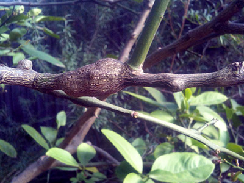
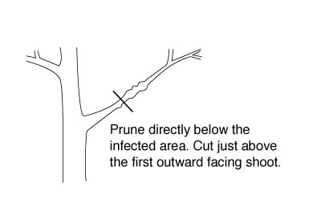
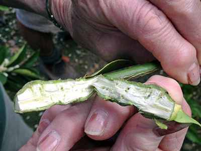

Melbourne's lemon trees are under attack!
The native citrus gall wasp has colonised our lemon trees.
This is reducing productivity and is slowly killing our beautiful trees.
For more information on our upcoming crowdfunding project or to register for our mailing list please email Kaye Roberts-Palmer.
Got Gall?
What is Gall?

Gall is lumpy growths that occur in Citrus trees infected by the native Citrus Gall Wasp - (Bruchophagus fellis).
Originally, this native wasp was limited to Queensland and northern New South Wales where if fed on native finger limes. But the citrus gall wasp has adapted to a wider variety of citrus fruits. Since the 1990’s it has successfully migrated through NSW to Melbourne where it is now virtually endemic in the back yard lemon tree.
The Citrus Gall wasp has a 12 month lifecycle starting in spring when it lays eggs in the fresh new stems of the citrus tree. The eggs hatch two to four weeks later and begin feeding inside the stems. This causes the tree to produce swollen lumpy stems known as Galls. The wasp larvae grow within the soft stem tissue for 9 to 12 months until they pupate and emerge as adult wasps the following year. Adult citrus gall wasps are rarely seen as they less than 3mm in size.
Can I leave the gall in the tree?
No. Not only does Citrus Gall wasp reduce your trees fruit production, but it also causes a slow decline of the trees health, eventually killing it. When the wasps emerge from the galls they will re-infect the host tree and infect other trees in your neighbourhood.
Can I eat fruit from a tree with gall?
Yes. The fruit is unaffected.
Control Methods.

Avoid high nitrogen fertilizers in spring.
Fertilizing with a high nitrogen content in spring will promote excessive new soft growth which is very attractive to the wasp.
Avoid using ‘sticky’ yellow traps as they also kill beneficial insects.
Two similar sized parasitic wasps, Megastigmus brevivalvus and M. trisulcus, are predators of the Citrus Gall Wasp. These are honey-coloured and can be easily distinguished from the black coloured Citrus Gall Wasp adults. The parasitic wasps lay their eggs directly into Citrus Gall Wasp eggs, feeding on and eventually killing their hosts. Up to 90% of gall wasp larvae can be parasitised.
Monitor your citrus trees for signs of infestation between June and September when galls are at their largest and most visible.
Prune active galls out as they appear. Remove all gall material by late August before the wasps begin to hatch.
Pruning Technique
Prune directly below the infected area. Cut just above the first outward facing shoot.
If your tree is heavily infected, requiring a hard prune, you may not get fruit for 2 years.
Correct Disposal.

Do not dispose of infected material in your green bin or compost. The galls will still hatch and may re-infect your tree - and your neighbours.
Ideally infected prunings should be burnt. Check with your local Council guidelines. And always conduct any incineration in a safe manner.
If incineration is not an option, double bag the infected material and put in your rubbish bin - not your green bin.
Other disposal techniques include cutting through the galls with secateurs, and immersing the galls in water for several weeks.
Co-ordination is Key.

Problems arise when trees are pruned at the wrong time or not pruned at all leaving the wasp to spread and contaminate new trees.
If we all prune by late August and destroy infected material correctly we can reduce the spread of Citrus Gall Wasp.
Have you noticed trees in your area that are not maintained? Or do you have an elderly neighbour who can not look after their tree? Overall, the infestation rates will improve when as many trees as possible are treated at the same time, so if possible please help your friends and neighbours to care for their citrus trees.
Be a good neighbour and a friend to lemon trees and get with the program.